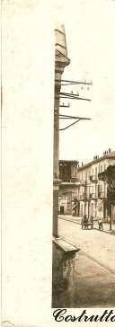
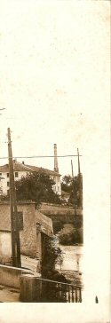
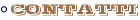

|  | ||
|  | ||
L'Impresa Edile Tosi opera nel settore delle costruzioni edili da più di 50 anni, sia nell'ambito dei LL. PP., che in iniziative immobiliari di propria iniziativa nell'area della Città di Borgomanero.
Impresa di costruzioni e manutenzioni edili
Attestazione di Qualificazione
alla esecuzione di lavori pubblici
Numero 5925
banca
dati dell' AVCP